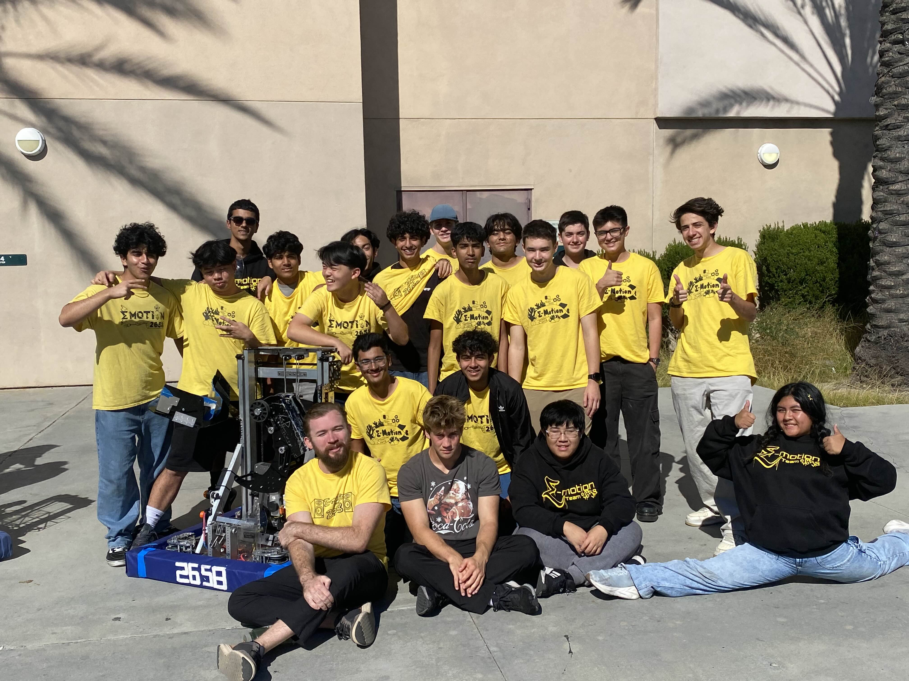

Coding Projects
Websites, calculators, Python games, and advanced Java projects including Robocode bots.
Java Calculator
This project is a Java Swing-based scientific calculator that mimics a Casio interface, featuring functional buttons for trigonometry, logarithms, and square roots. It includes specialized logic for symbolic math results (like π or 3 /2) and an S↔D function to toggle between decimal and fraction formats.

Electronics & Robotics
Arduino, Raspberry Pi, and NodeMCU projects including automation and electronics-based systems.